Chapter VII — Frame, Molt, Hebdo
Pages 063 to 092 of the book · chapter 7 of 8
Chapter VII of La Livrée d'Hermès: Frame, Molt and Hebdo. Geomancy and the chronological order of the hexagrams, the axes of symmetry and the Yin and Yang of a motif, the draw and the superpositions of layers.
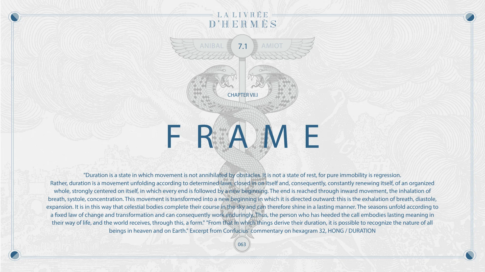
7.1
CHAPTER VII.I
FRAME
ANIBAL
AMIOT
"Duration is a state in which movement is not annihilated by obstacles. It is not a state of rest, for pure immobility is regression. Rather, duration is a movement unfolding according to determined laws, closed in on itself and, consequently, constantly renewing itself, of an organized whole, strongly centered on itself, in which every end is followed by a new beginning. The end is reached through inward movement, the inhalation of breath, systole, concentration. This movement is transformed into a new beginning in which it is directed outward: this is the exhalation of breath, diastole, expansion. It is in this way that celestial bodies complete their course in the sky and can therefore shine in a lasting manner. The seasons unfold according to a fixed law of change and transformation and can consequently work enduringly. Thus, the person who has heeded the call embodies lasting meaning in their way of life, and the world receives, through this, a form." "From that in which things derive their duration, it is possible to recognize the nature of all beings in heaven and on Earth." Excerpt from Confucius' commentary on hexagram 32, HONG / DURATION
063
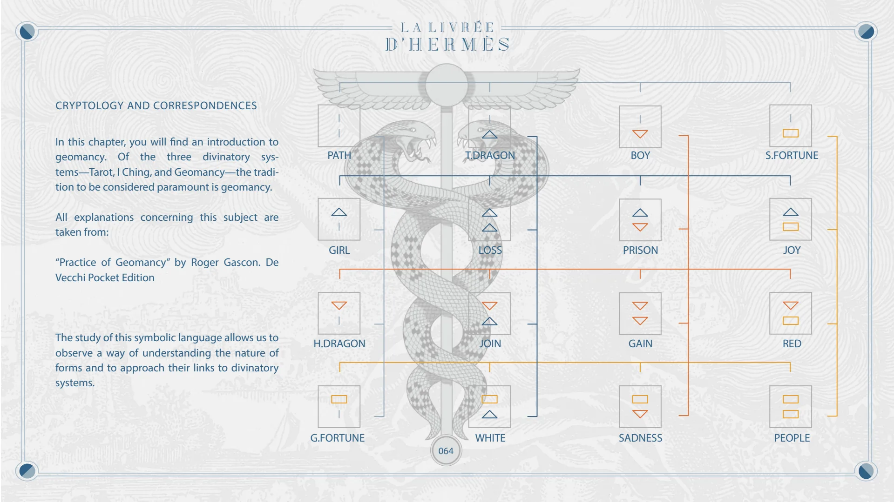
CRYPTOLOGY AND CORRESPONDENCES
In this chapter, you will find an introduction to geomancy. Of the three divinatory systems—Tarot, I Ching, and Geomancy—the tradition to be considered paramount is geomancy.
PATH
T.DRAGON
BOY
S.FORTUNE
All explanations concerning this subject are taken from:
“Practice of Geomancy” by Roger Gascon. De Vecchi Pocket Edition
GIRL
LOSS
PRISON
JOY
The study of this symbolic language allows us to observe a way of understanding the nature of forms and to approach their links to divinatory systems.
H.DRAGON
JOIN
GAIN
RED
G.FORTUNE
064
WHITE
SADNESS
PEOPLE
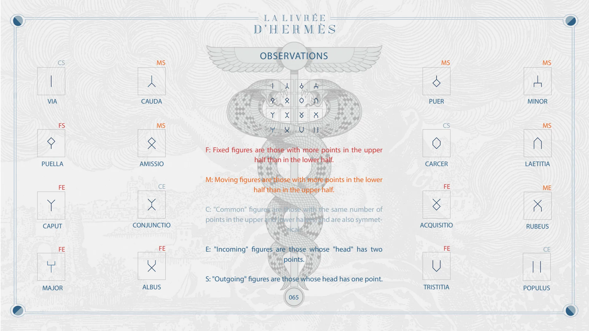
OBSERVATIONS
CS VIA FS
PUELLA
MS
CAUDA
MS
AMISSIO
F: Fixed figures are those with more points in the upper half than in the lower half.
MS
PUER
CS
CARCER
MS
MINOR
MS
LAETITIA
FE CE
M: Moving figures are those with more points in the lower half than in the upper half.
FE ME
CAPUT
CONJUNCTIO
C: "Common" figures are those with the same number of points in the upper and lower halves, and are also symmetrical.
ACQUISITIO
RUBEUS
FE FE
E: "Incoming" figures are those whose "head" has two points.
FE CE
S: "Outgoing" figures are those whose head has one point.
MAJOR
ALBUS
065
TRISTITIA
POPULUS
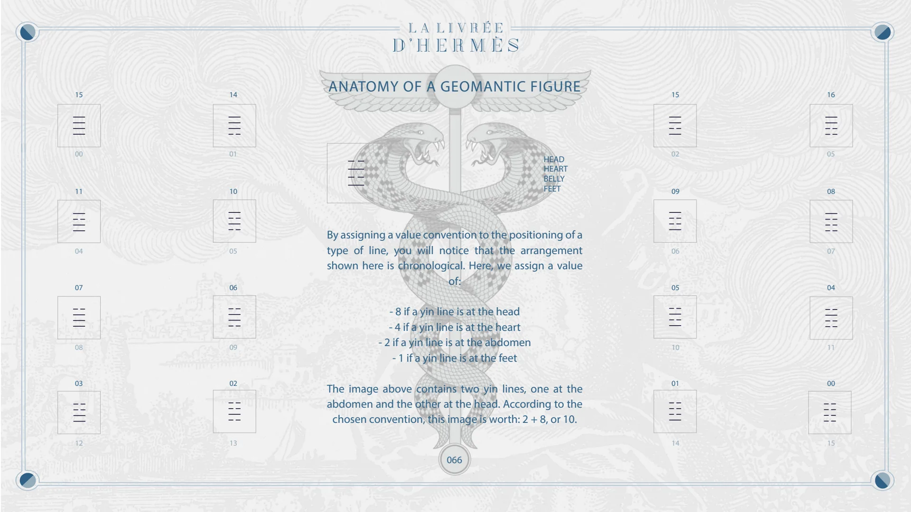
ANATOMY OF A GEOMANTIC FIGURE
15 00 11 04 07 14 01 10 05 06
HEAD HEART BELLY FEET
By assigning a value convention to the positioning of a type of line, you will notice that the arrangement shown here is chronological. Here, we assign a value of:
15 02 09 06 05 16 05 08 07 04 08 09
- 8 if a yin line is at the head - 4 if a yin line is at the heart - 2 if a yin line is at the abdomen - 1 if a yin line is at the feet
10 11 03 02
The image above contains two yin lines, one at the abdomen and the other at the head. According to the chosen convention, this image is worth: 2 + 8, or 10.
01 00 12 13 066 14 15
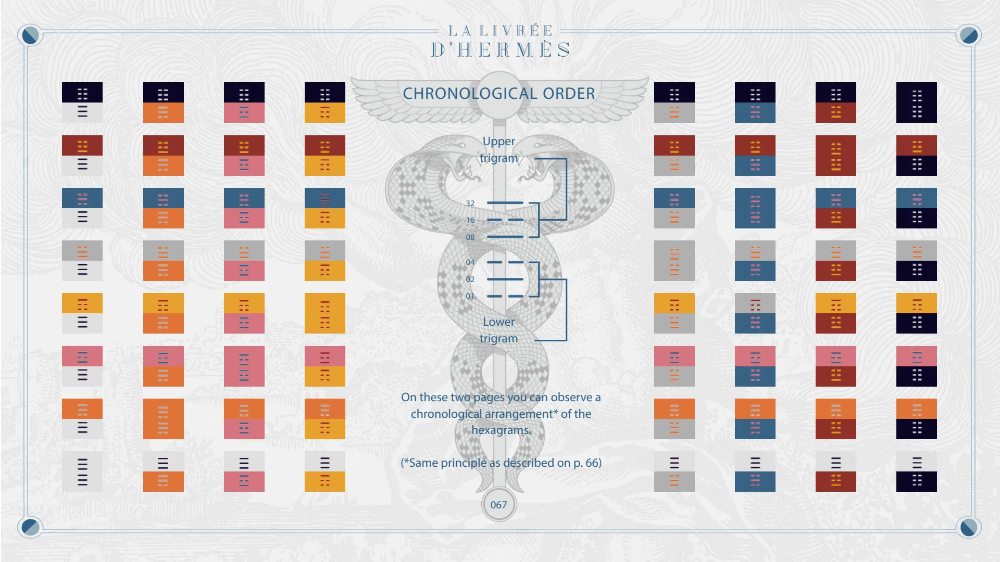
CHRONOLOGICAL ORDER
32 16 08 04 02 01 Upper trigram Lower trigram
On these two pages you can observe a chronological arrangement* of the hexagrams.
(*Same principle as described on p. 66)
067
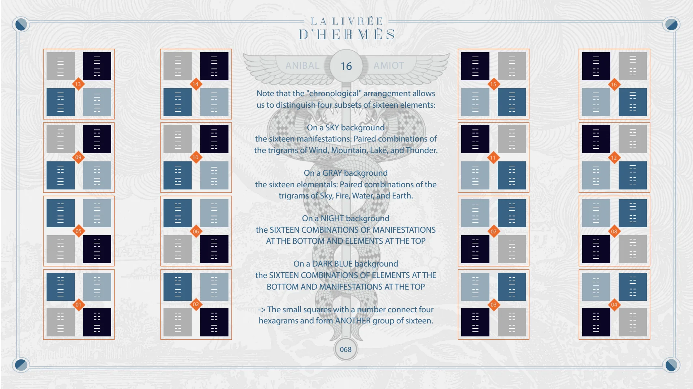
16 13 14
ANIBAL
AMIOT
Note that the "chronological" arrangement allows us to distinguish four subsets of sixteen elements:
15 16 09 10
On a SKY background the sixteen manifestations: Paired combinations of the trigrams of Wind, Mountain, Lake, and Thunder.
11 12
On a GRAY background the sixteen elementals: Paired combinations of the trigrams of Sky, Fire, Water, and Earth.
05 06
On a NIGHT background the SIXTEEN COMBINATIONS OF MANIFESTATIONS AT THE BOTTOM AND ELEMENTS AT THE TOP
07 08
On a DARK BLUE background the SIXTEEN COMBINATIONS OF ELEMENTS AT THE BOTTOM AND MANIFESTATIONS AT THE TOP
01 02
-> The small squares with a number connect four hexagrams and form ANOTHER group of sixteen.
03 04 068
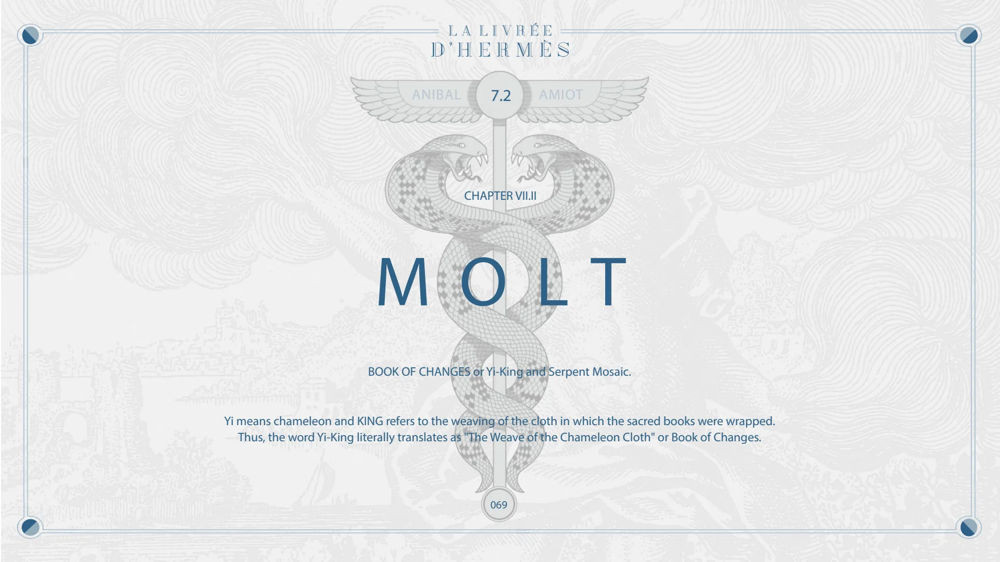
7.2
CHAPTER VII.II
MOLT
ANIBAL
AMIOT
BOOK OF CHANGES or Yi-King and Serpent Mosaic.
Yi means chameleon and KING refers to the weaving of the cloth in which the sacred books were wrapped. Thus, the word Yi-King literally translates as "The Weave of the Chameleon Cloth" or Book of Changes.
069
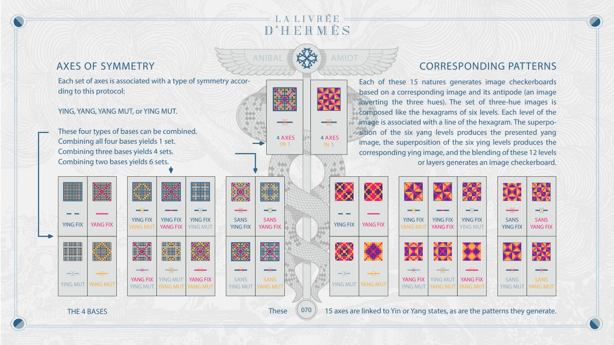
AXES OF SYMMETRY
Each set of axes is associated with a type of symmetry according to this protocol:
YING, YANG, YANG MUT, or YING MUT.
These four types of bases can be combined. Combining all four bases yields 1 set. Combining three bases yields 4 sets. Combining two bases yields 6 sets.
YING FIX
YANG FIX
YING MUT
YANG MUT
THE 4 BASES
YING FIX YANG MUT
YANG FIX YING MUT
YING FIX YANG FIX
YING MUT YANG MUT
YING FIX YING MUT
YANG FIX YANG MUT
SANS YING FIX
SANS YING MUT
ANIBAL
4 AXES IN 1
SANS YANG FIX
AMIOT
4 AXES IN 1
YING FIX
CORRESPONDING PATTERNS
Each of these 15 natures generates image checkerboards based on a corresponding image and its antipode (an image inverting the three hues). The set of three-hue images is composed like the hexagrams of six levels. Each level of the image is associated with a line of the hexagram. The superposition of the six yang levels produces the presented yang image, the superposition of the six ying levels produces the corresponding ying image, and the blending of these 12 levels or layers generates an image checkerboard.
YANG FIX
YING FIX YANG MUT
YING FIX YANG FIX
YING FIX YING MUT
SANS YING FIX
SANS YANG FIX
SANS YANG MUT
YING MUT
YANG MUT
YANG FIX YING MUT
YING MUT YANG MUT
YANG FIX YANG MUT
SANS YING MUT
SANS YANG MUT
These 15 axes are linked to Yin or Yang states, as are the patterns they generate.
070
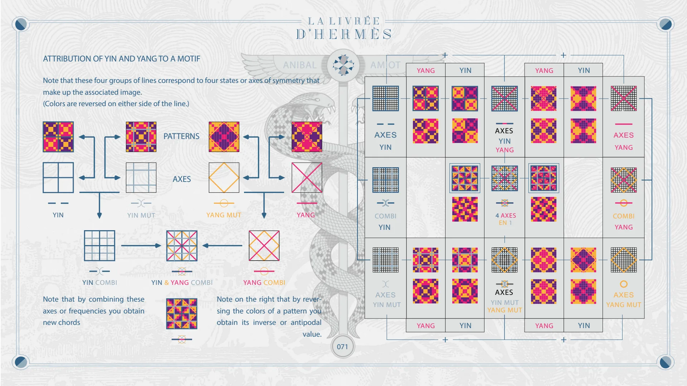
ATTRIBUTION OF YIN AND YANG TO A MOTIF
ANIBAL
Note that these four groups of lines correspond to four states or axes of symmetry that make up the associated image. (Colors are reversed on either side of the line.)
PATTERNS
AXES
AMIOT
AXES
YIN
YANG
+ YIN
AXES YIN YANG
YANG
+ YIN
AXES
YANG
YIN
YIN MUT
YIN COMBI
Note that by combining these axes or frequencies you obtain new chords
YANG MUT
YANG
YIN & YANG COMBI
YANG COMBI
Note on the right that by reversing the colors of a pattern you obtain its inverse or antipodal value.
COMBI YIN
AXES
YIN MUT
YANG
+ YIN
4 AXES EN 1
AXES YIN MUT YANG MUT
YANG
+ YIN
COMBI YANG
AXES
YANG MUT
071
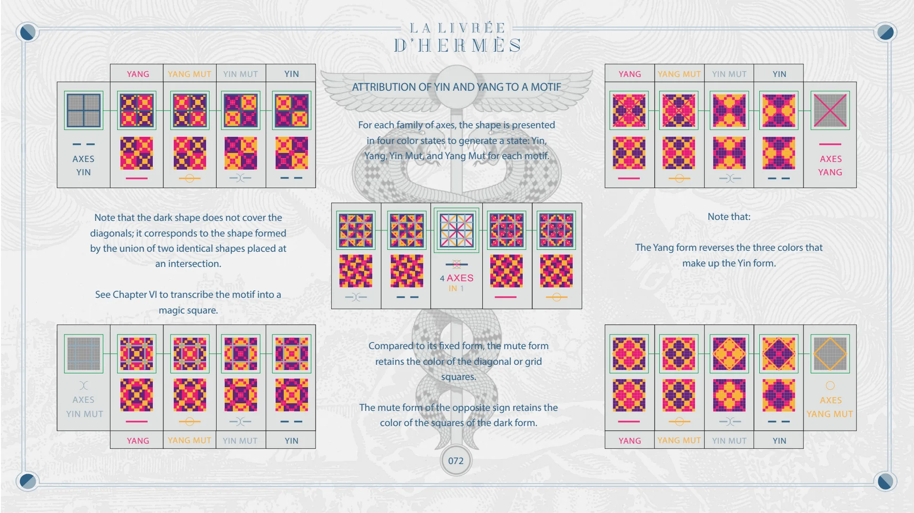
ATTRIBUTION OF YIN AND YANG TO A MOTIF
YANG
YANG MUT
YIN MUT
YIN
AXES YIN
Note that the dark shape does not cover the diagonals; it corresponds to the shape formed by the union of two identical shapes placed at an intersection.
See Chapter VI to transcribe the motif into a magic square.
AXES YIN MUT
For each family of axes, the shape is presented in four color states to generate a state: Yin, Yang, Yin Mut, and Yang Mut for each motif.
4 AXES
IN 1
Compared to its fixed form, the mute form retains the color of the diagonal or grid squares.
The mute form of the opposite sign retains the color of the squares of the dark form.
YANG
YANG MUT
YIN MUT
YIN
AXES YANG
Note that:
The Yang form reverses the three colors that make up the Yin form.
AXES YANG MUT
YANG
YANG MUT
YIN MUT
YIN 072
YANG
YANG MUT
YIN MUT
YIN
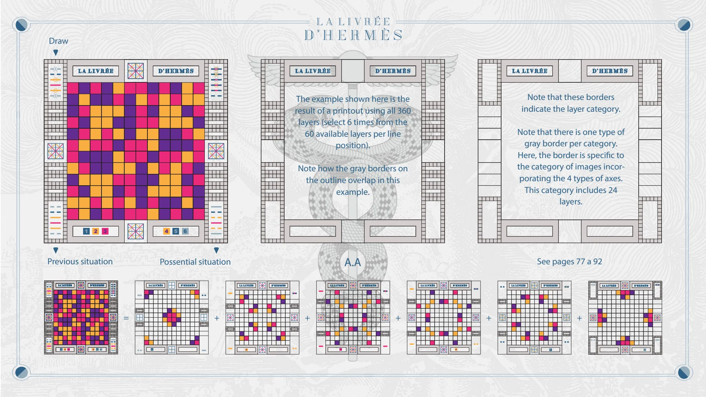
Draw
The example shown here is the result of a printout using all 360 layers (select 6 times from the 60 available layers per line position).
Note how the gray borders on the outline overlap in this example.
Note that these borders indicate the layer category.
Note that there is one type of gray border per category. Here, the border is specific to the category of images incorporating the 4 types of axes. This category includes 24 layers.
1 2 3 Previous situation 1 2 3 4 5 6 = 1 4 5 6 Possential situation + 2 + 3 A.A + 4 +
See pages 77 a 92
5 + 6
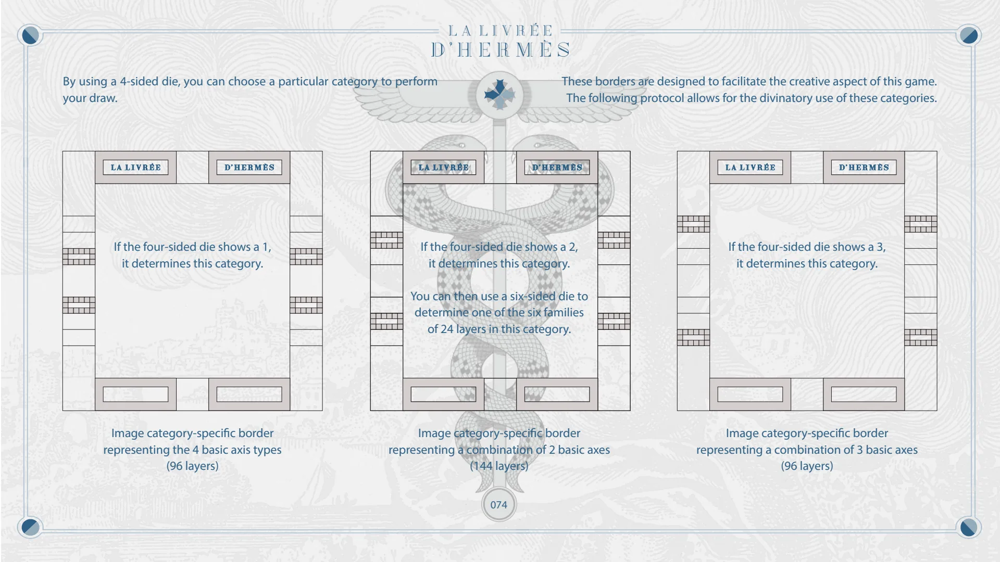
By using a 4-sided die, you can choose a particular category to perform your draw.
A.A
These borders are designed to facilitate the creative aspect of this game. The following protocol allows for the divinatory use of these categories.
If the four-sided die shows a 1, it determines this category.
Image category-specific border representing the 4 basic axis types (96 layers)
If the four-sided die shows a 2, it determines this category.
You can then use a six-sided die to determine one of the six families of 24 layers in this category.
Image category-specific border representing a combination of 2 basic axes (144 layers)
If the four-sided die shows a 3, it determines this category.
Image category-specific border representing a combination of 3 basic axes (96 layers)
074
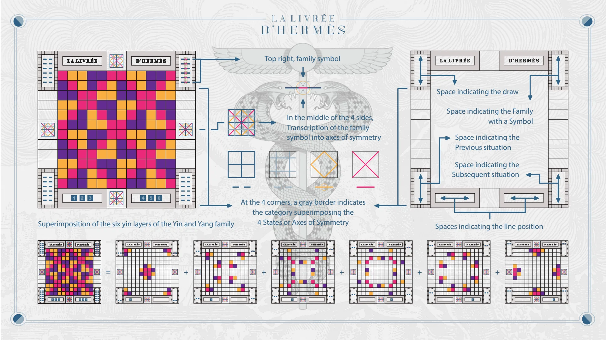
Top right, family symbol
1 2 3 4 5 6
Superimposition of the six yin layers of the Yin and Yang family
In the middle of the 4 sides, Transcription of the family symbol into axes of symmetry
At the 4 corners, a gray border indicates the category superimposing the 4 States or Axes of Symmetry
Space indicating the draw
Space indicating the Family with a Symbol
Space indicating the Previous situation
Space indicating the Subsequent situation
Spaces indicating the line position
1 2 3 4 5 6 = 1 + 2 + 3 + 4 + 5 + 6
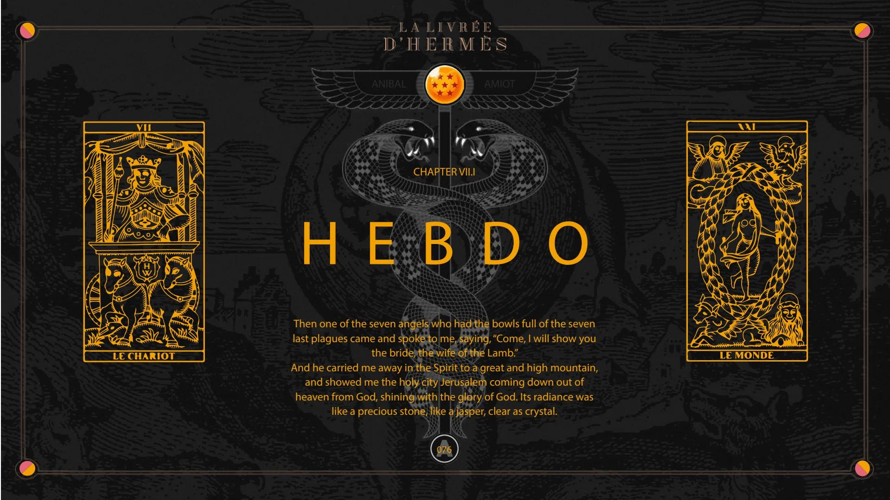
CHAPTER VII.I
HEBDO
ANIBAL
AMIOT
Then one of the seven angels who had the bowls full of the seven last plagues came and spoke to me, saying, “Come, I will show you the bride, the wife of the Lamb.” And he carried me away in the Spirit to a great and high mountain, and showed me the holy city Jerusalem coming down out of heaven from God, shining with the glory of God. Its radiance was like a precious stone, like a jasper, clear as crystal.
A 076
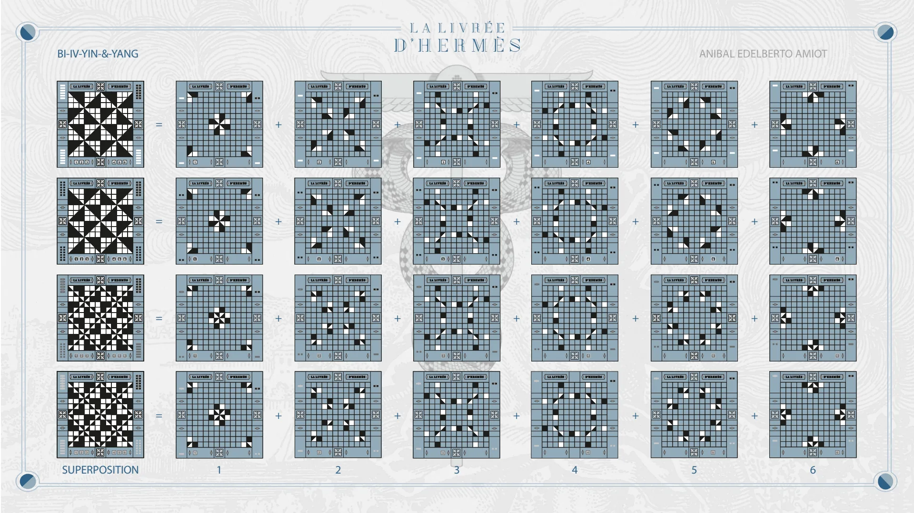
BI-IV-YIN-&-YANG
1 2 3 4 5 6 1 2 3 4 5 6 1 2 3 4 5 6 1 2 3 4 5 6
SUPERPOSITION
= = = = 1 1 1 1 1 + + + + 2 2 2 2 2 + + + + 3 3 3 3 3 + + + + 4 4 4 4 4 + + + + 5
ANIBAL EDELBERTO AMIOT
5 5 5 5 + + + + 6 6 6 6 6
TRI-IV-YIN-&-YANG
1 2 3 4 5 6 1 2 3 4 5 6 1 2 3 4 5 6 1 2 3 4 5 6
SUPERPOSITION
= = = = 1 1 1 1 1 + + + + 2 2 2 2 2 + + + + 3 3 3 3 3 + + + + 4 4 4 4 4 + + + + 5
ANIBAL EDELBERTO AMIOT
5 5 5 5 + + + + 6 6 6 6 6
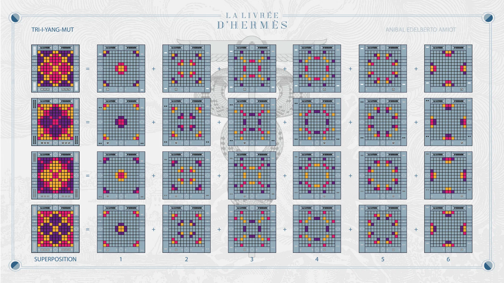
TRI-I-YANG-MUT
1 2 3 4 5 6 1 2 3 4 5 6 1 2 3 4 5 6 1 2 3 4 5 6
SUPERPOSITION
= = = = 1 1 1 1 1 + + + + 2 2 2 2 2 + + + + 3 3 3 3 3 + + + + 4 4 4 4 4 + + + + 5
ANIBAL EDELBERTO AMIOT
5 5 5 5 + + + + 6 6 6 6 6
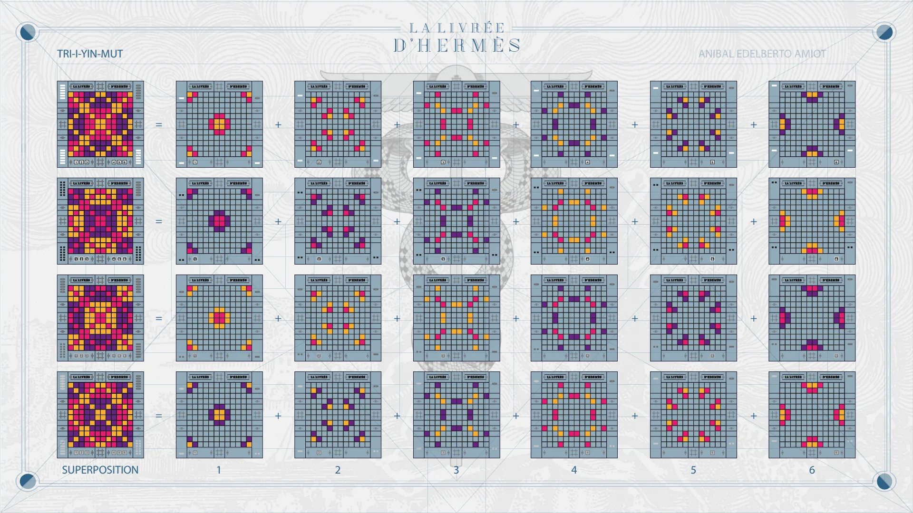
TRI-I-YIN-MUT
1 2 3 4 5 6 1 2 3 4 5 6 1 2 3 4 5 6 1 2 3 4 5 6
SUPERPOSITION
= = = = 1 1 1 1 1 + + + + 2 2 2 2 2 + + + + 3 3 3 3 3 + + + + 4 4 4 4 4 + + + + 5
ANIBAL EDELBERTO AMIOT
5 5 5 5 + + + + 6 6 6 6 6
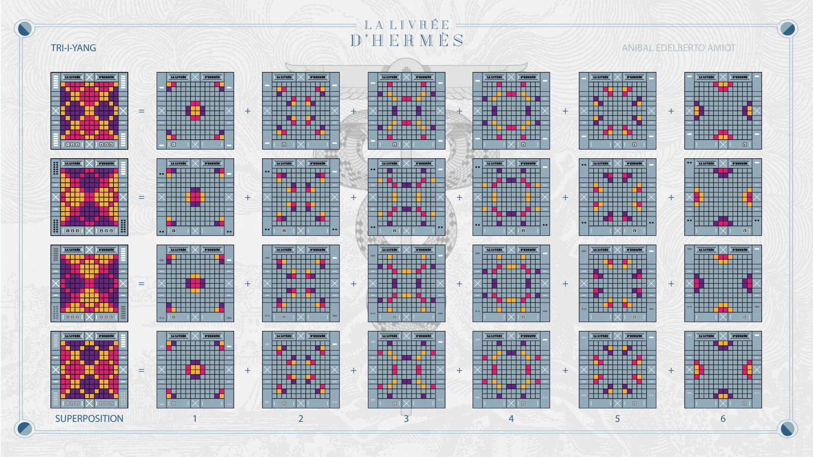
TRI-I-YANG
1 2 3 4 5 6 1 2 3 4 5 6 1 2 3 4 5 6 1 2 3 4 5 6
SUPERPOSITION
= = = = 1 1 1 1 1 + + + + 2 2 2 2 2 + + + + 3 3 3 3 3 + + + + 4 4 4 4 4 + + + + 5
ANIBAL EDELBERTO AMIOT
5 5 5 5 + + + + 6 6 6 6 6
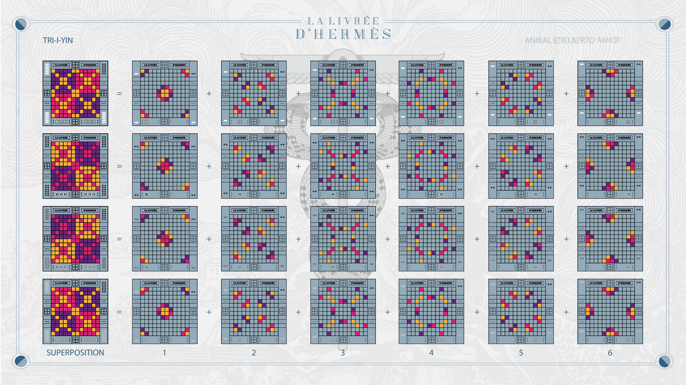
TRI-I-YIN
1 2 3 4 5 6 1 2 3 4 5 6 1 2 3 4 5 6 1 2 3 4 5 6
SUPERPOSITION
= = = = 1 1 1 1 1 + + + + 2 2 2 2 2 + + + + 3 3 3 3 3 + + + + 4 4 4 4 4 + + + + 5
ANIBAL EDELBERTO AMIOT
5 5 5 5 + + + + 6 6 6 6 6
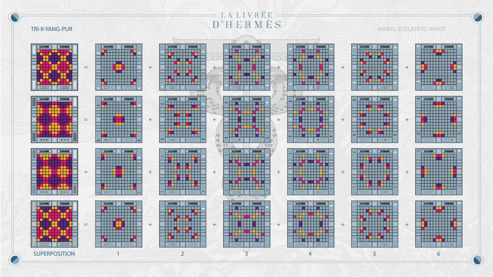
TRI-II-YANG-PUR
1 2 3 4 5 6 1 2 3 4 5 6 1 2 3 4 5 6 1 2 3 4 5 6
SUPERPOSITION
= = = = 1 1 1 1 1 + + + + 2 2 2 2 2 + + + + 3 3 3 3 3 + + + + 4 4 4 4 4 + + + + 5
ANIBAL EDELBERTO AMIOT
5 5 5 5 + + + + 6 6 6 6 6
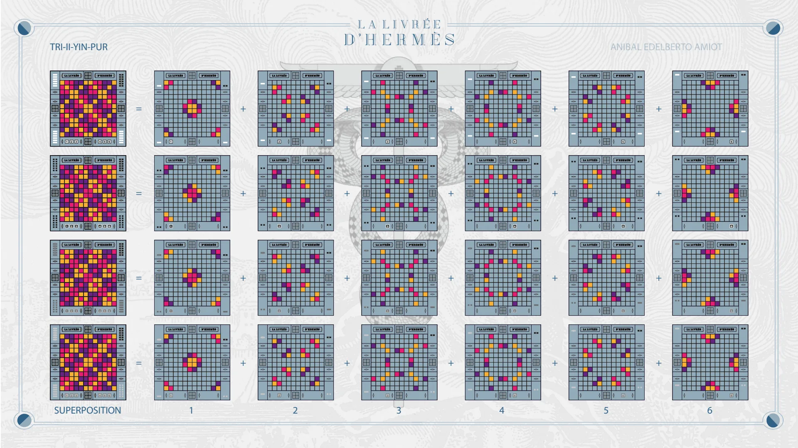
TRI-II-YIN-PUR
1 2 3 4 5 6 1 2 3 4 5 6 1 2 3 4 5 6 1 2 3 4 5 6
SUPERPOSITION
= = = = 1 1 1 1 1 + + + + 2 2 2 2 2 + + + + 3 3 3 3 3 + + + + 4 4 4 4 4 + + + + 5
ANIBAL EDELBERTO AMIOT
5 5 5 5 + + + + 6 6 6 6 6
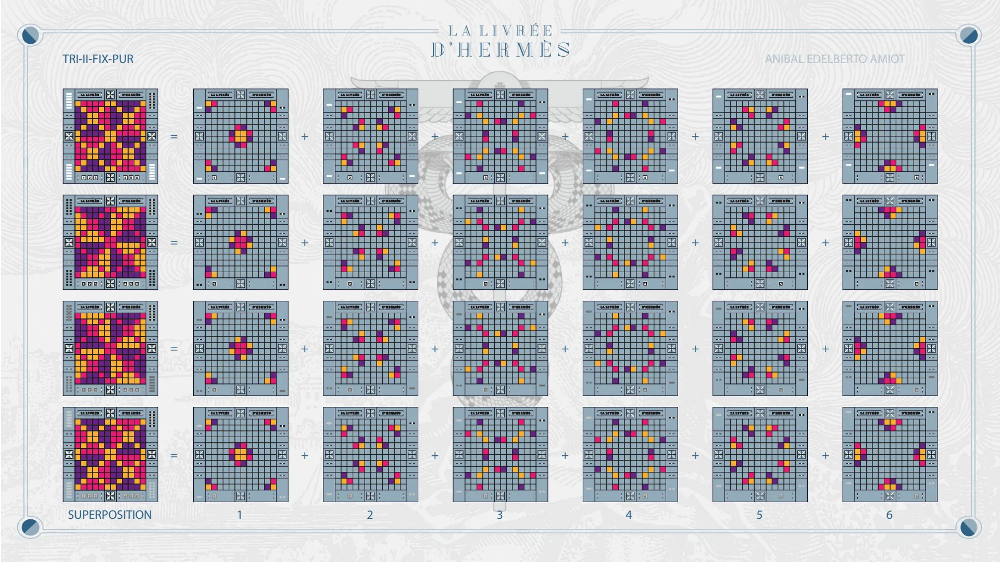
TRI-II-FIX-PUR
1 2 3 4 5 6 1 2 3 4 5 6 1 2 3 4 5 6 1 2 3 4 5 6
SUPERPOSITION
= = = = 1 1 1 1 1 + + + + 2 2 2 2 2 + + + + 3 3 3 3 3 + + + + 4 4 4 4 4 + + + + 5
ANIBAL EDELBERTO AMIOT
5 5 5 5 + + + + 6 6 6 6 6
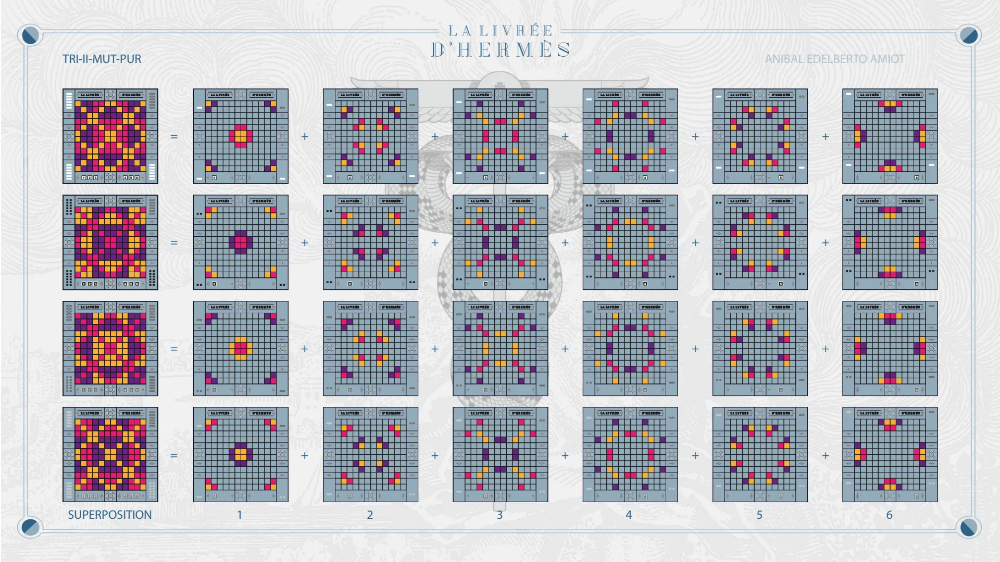
TRI-II-MUT-PUR
1 2 3 4 5 6 1 2 3 4 5 6 1 2 3 4 5 6 1 2 3 4 5 6
SUPERPOSITION
= = = = 1 1 1 1 1 + + + + 2 2 2 2 2 + + + + 3 3 3 3 3 + + + + 4 4 4 4 4 + + + + 5
ANIBAL EDELBERTO AMIOT
5 5 5 5 + + + + 6 6 6 6 6
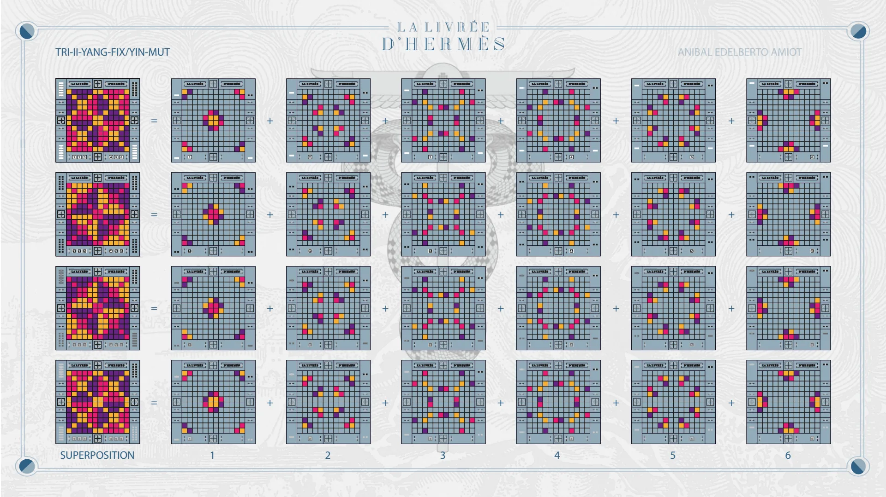
TRI-II-YANG-FIX/YIN-MUT
1 1 1 1 2 2 2 2 3 3 3 3 4 4 4 4 5 5 5 5 6 6 6 6 1 2 3 4 5 6 1 2 3 4 5 6 1 2 3 4 5 6
SUPERPOSITION
= = = = 1 1 1 1 1 + + + + 2 2 2 2 2 + + + + 3 3 3 3 3 + + + + 4 4 4 4 4 + + + + 5
ANIBAL EDELBERTO AMIOT
5 5 5 5 + + + + 6 6 6 6 6
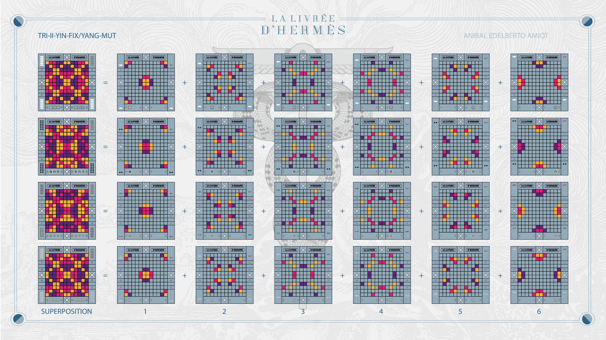
TRI-II-YIN-FIX/YANG-MUT
1 2 3 4 5 6 1 2 3 4 5 6 1 2 3 4 5 6 1 2 3 4 5 6
SUPERPOSITION
= = = = 1 1 1 1 1 + + + + 2 2 2 2 2 + + + + 3 3 3 3 3 + + + + 4 4 4 4 4 + + + + 5
ANIBAL EDELBERTO AMIOT
5 5 5 5 + + + + 6 6 6 6 6
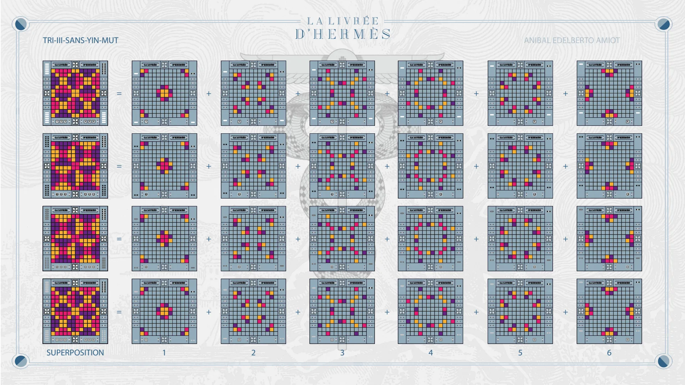
TRI-III-SANS-YIN-MUT
1 2 3 4 5 6 1 2 3 4 5 6 1 2 3 4 5 6 1 2 3 4 5 6
SUPERPOSITION
= = = = 1 1 1 1 1 + + + + 2 2 2 2 2 + + + + 3 3 3 3 3 + + + + 4 4 4 4 4 + + + + 5
ANIBAL EDELBERTO AMIOT
5 5 5 5 + + + + 6 6 6 6 6
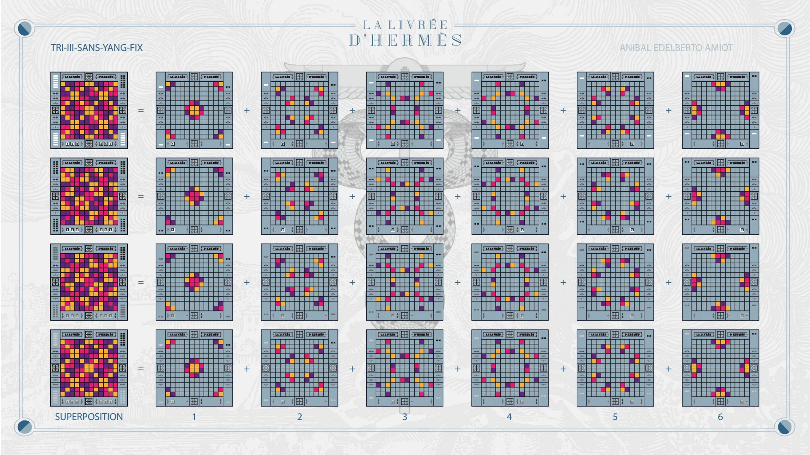
TRI-III-SANS-YANG-FIX
1 2 3 4 5 6 1 2 3 4 5 6 1 2 3 4 5 6 1 2 3 4 5 6
SUPERPOSITION
= = = = 1 1 1 1 1 + + + + 2 2 2 2 2 + + + + 3 3 3 3 3 + + + + 4 4 4 4 4 + + + + 5
ANIBAL EDELBERTO AMIOT
5 5 5 5 + + + + 6 6 6 6 6
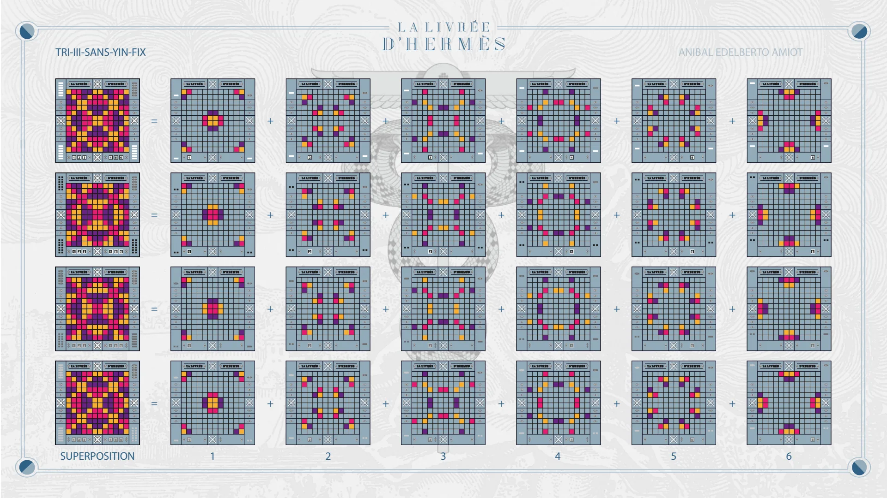
TRI-III-SANS-YIN-FIX
1 2 3 4 5 6 1 2 3 4 5 6 1 2 3 4 5 6 1 2 3 4 5 6
SUPERPOSITION
= = = = 1 1 1 1 1 + + + + 2 2 2 2 2 + + + + 3 3 3 3 3 + + + + 4 4 4 4 4 + + + + 5
ANIBAL EDELBERTO AMIOT
5 5 5 5 + + + + 6 6 6 6 6
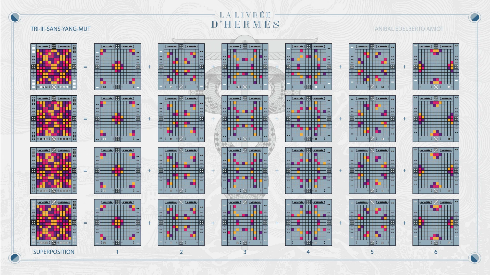
TRI-III-SANS-YANG-MUT
1 2 3 4 5 6 1 2 3 4 5 6 1 2 3 4 5 6 1 2 3 4 5 6
SUPERPOSITION
= = = = 1 1 1 1 1 + + + + 2 2 2 2 2 + + + + 3 3 3 3 3 + + + + 4 4 4 4 4 + + + + 5
ANIBAL EDELBERTO AMIOT
5 5 5 5 + + + + 6 6 6 6 6
© Anibal Edelberto Amiot. CC BY-NC 4.0 — creativecommons.org/licenses/by-nc/4.0 · DOI 10.5281/zenodo.22722485